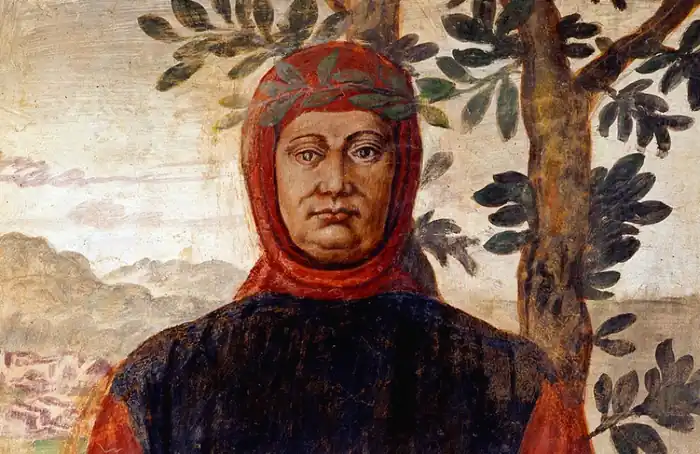
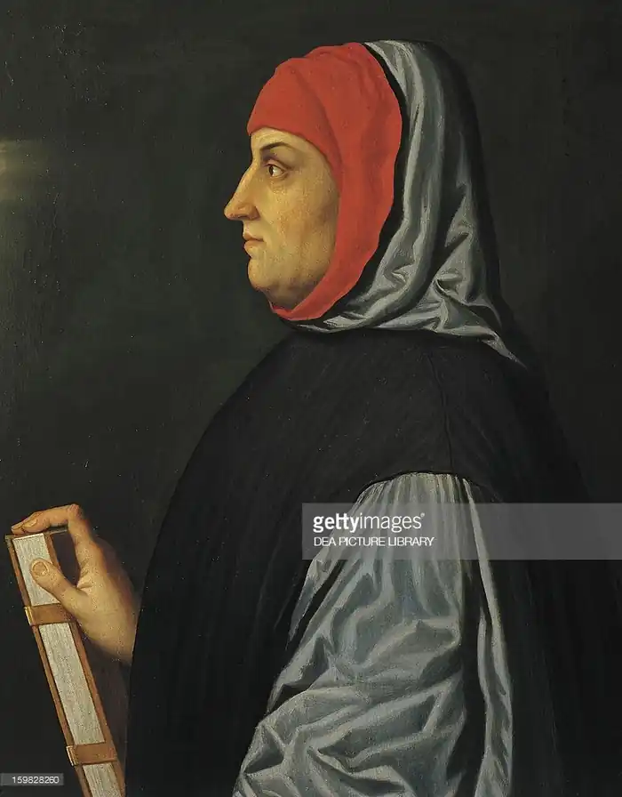
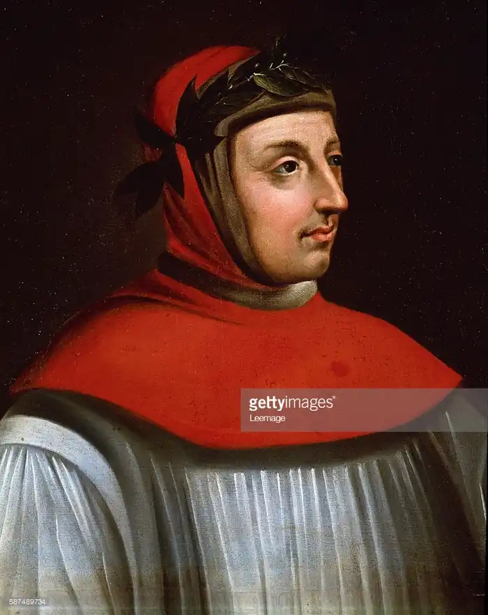

ФРАНЧЕСКО ПЕТРАРКА
(1304-1374)
Епоха Ренесансу в свідомості наших сучасників зазвичай асоціюється з іменами Леонардо да Вінчі, Рафаеля, Тиціана, Мікеланджело, Дюрера, Брейгеля, Рабле, Сервантеса, Шекспіра, Боккаччо, Еразма Роттердамського, Монтеня. Але своїм культурним відродженням Європа, можливо, в першу чергу, зобов'язана великому італійцеві, Франческо Петрарці. Це був перший видатний гуманіст, поет, котрому вдалось побачити цілісність течії думок, що передували Відродженню, і об'єднати їх у поетичному синтезі, котрий став програмою наступних європейських поколінь. Петрарка — засновник нової сучасної поезії, людина, яка наважилася в мороці середньовіччя запалити полум'я не так божественного, як земного, людського почуття. Народився Франческо Петрарка у місті Ареццо в родині нотаріуса, який у 1302 році був разом з Данте вигнаний із Флоренції за приналежність до партії білих гвельфів. У 1312 році родина переїхала до міста Авіньон на півдні Франції, де в той час знаходилася резиденція папи. З п'яти-шести років Петрарка уже займався граматикою, риторикою та логікою. На настійну вимогу батька Франческо вивчає право спершу в Монпельє, потім у Болоньї, але відчуває до цього нехіть, віддаючи перевагу юридичним наукам, заняттям зі стародавньої літератури, серйозно захоплюється поетами-класиками. Батько не схвалював захоплення сина й якось навіть кинув у вогонь твори Цицерона, Вергілія та інших класичних авторів. У 1318 році помирає мати Франческо. У 1320 році батько відсилає Петрарку до Болоньї, відомого центру вивчення римського права. Юнакові сподобались життєрадісність і пишнота Болоньї. Численні знайомі вже читали вірші поета, але батько не вбачав у цьому майбутньої слави сина. А Франческо продовжував таємно писати, оскільки відчував відразу до юриспруденції. У юнацькі роки відбувається становлення особистості Петрарки: любов до волі, до природи, спокою, потяг до знань, активна життєва позиція. Він усією душею ненавидить феодальні міжусобиці, братовбивчі війни, тиранію правителів. У цей же час у юнака виник потяг до моральної філософії. Смерть батька (1326) відразу все змінила. Ставши невдовзі ліричним поетом, Петрарка не втратив інтересу до класичної стародавності. Напаки, цей інтерес усе зростав, поки не перетворився на справжню пристрасть. Петрарка захоплено вивчав здобутки античних авторів, що відкривали перед ним новий і прекрасний світ, такий несхожий на світ середньовічного релігійного фанатизму, церковних догм і аскетичного бузувірства. Антична культура відтоді для нього вже не вбачалася служницею богослов'я. Він перший з дивовижною ясністю побачив, що в ній було справді найголовнішим: жвавий інтерес до людини і навколишнього світу; у його руках класична стародавність стала бойовим прапором ренесансного гуманізму. Гаряча любов Петрарки до стародавнього світу була повсякчасною. Він писав мовою класичного Риму; з рідкісним ентузіазмом розшукував і вивчав стародавні рукописи й радів, якщо йому вдавалося знайти якийсь загублений твір Цицерона чи Квінтіліана. У нього була унікальна бібліотека класичних текстів. Його дивовижна ерудиція викликала заслужену повагу й захват сучасників. Діянням стародавньо-римського полководця Сціпіона Африканського Старшого присвятив він свою поему "Африка", написану в наслідування "Енеїді" Вергілія. Цицерона та Вергілія вважав він найвидатнішими письменниками світу, а їхні твори — неперевершеними зразками літературної майстерності. Петрарка так зріднився зі стародавнім світом, так увійшов у нього, що цей світ перестав бути для нього стародавнім, мертвим. Він увесь час відчував його живий подих, чув його голос. Видатні римські письменники стали його близькими друзями й наставниками. Цицерона він шанобливо називав батьком, а Вергілія — братом. Він писав їм усім дружні листи, немов вони жили з ним водночас десь неподалік. Він навіть зізнався, що спогади про стародавніх і їхні діяння збуджують у ньому "чудове почуття радості" у той час, як саме лише споглядання сучасників викликає відразу. Одначе на підставі подібних визнань не треба уявляти собі Петрарку таким собі педантом, що утратив будь-який зв'язок із дійсністю. Адже стародавні автори навчали його, як писати, як жити. У них він шукав відповіді на злободенні питання, що хвилювали його. Так, захоплюючись, величчю Стародавнього Риму, він водночас гірко ремствував з приводу політичного безладдя у сучасній йому Італії. Національним лихом, як і Данте, вважав вік її політичну роздрібненість, що породжувала нескінченні чвари й міжусобні війни, але не знав, та й не міг у тодішніх історичних умовах вказати шляхи, які б привели країну до державної єдності. Тому Петрарка то гаряче вітав антифеодальне повстання в Римі 1347 року, на чолі якого стояв народний трибун Кола ді Рієнци, який проголосив у Римі республіку й оголосив політичне об'єднання Італії, то покладав свої надії на пап Бенедикта XII і Климента VI, то на неаполітанського короля Роберта Анжуйского, то на імператора Карла IV, який видав папі Кола ді Рієнци. Його політичні ідеали не відрізнялися чіткістю і послідовністю. Було в них багато наївного й утопічного, але одне не викликає сумнівів — це щира любов Петрарки до батьківщини, бажання побачити її зміцнілою й оновленою, гідною колишньої римської величі. У знаменитій канцоні "Миючи Італія" він із величезною пристрастю вилив свої патріотичні почуття. У Петрарки був допитливий дух, на який у середні віки дивилися, як на один із найтяжчих гріхів. Він об'їздив низку країн, побував у Римі та Парижі, Німеччині та Фландрії, усюди пильно вивчав вдачу людей, насолоджувався спогляданням незнайомих місць і порівнював бачене з тим, що було йому добре відомо. Коло його інтересів дуже велике: він філолог та історик, етнограф, географ, філософ і мораліст. Усе, що має стосунок до людини, її розуму, діянь, її культури привертає пильну увагу Петрарки. Книга "Про знаменитих чоловіків" містить біографії славетних римлян від Ромула до Цезаря, а також Олександра Македонського й Ганнібала. З безліччю історичних анекдотів, висловів та дотепів, запозичених у Цицерона, Світонія, Плінія й інших, знайомить книга "Про достопам'ятні речі". Трактат "Про засоби і проти щастя і нещастя" стосується найрізноманітніших життєвих ситуацій, проводить читача усіма ступенями тодішніх соціальних сходів. Між іншим, у названому трактаті Петрарка кинув виклик віковим феодальним уявленням, згідно з якими справжня шляхетність полягає у знатному походженні, у "блакитній крові". Якщо в середні століття шлях від людини, та й усі інші шляхи і вели неодмінно до Бога, то в Петрарки всі шляхи ведуть до людини. При цьому людина для Петрарки — це насамперед він сам. І він аналізує, зважує, оцінює свої вчинки й внутрішні спонукання. Церква жадала від людини смиренні мудрості, прославляючи І тих, хто відрікався від себе в ім'я Бога. Петрарка насмілився зазирнути в себе і сповнився гордістю за людину. У самому собі знайшов він невичерпні багатства людського розуму й духу. З ним, сином скромного нотаріуса, розмовляли як із рівнею знатні вельможі, вінценосці та князі церкви. Його слава була славою Італії. Але середньовіччя чинило завзятий опір натискові гуманізму. Воно насувалося на Петрарку в образах скульптури, живопису й архітектури, наполегливо нагадувало про себе з церковних та університетських кафедр, часом воно голосно озивалося в ньому самому. Тоді видатному гуманістові, захопленому шанувальнику язичної стародавності починало здаватися, що він іде гріховним і небезпечним шляхом. У ньому оживав середньовічний аскет, який відсторонено споглядав земні спокуси. Він відкладав убік твори Вергілія і Цицерона, щоб заглибитися в Біблію і писання батьків церкви. Ці внутрішні протиріччя Петрарки коренилися в глибоких протиріччях того перехідного часу, у нього вони тільки різкіше були виражені. При цьому він із тривогою спостерігав за своїм "внутрішнім розладом" і навіть спробував викласти його в книзі "Про презирство до світу" (1343), цій захопливій сповіді бентежної душі. Вагому роль у долі Петрарки мало знайомство з родиною Колонна. Після смерті батька він залишився без грошей. Рішення прийняти духовний сан зробило Петрарку капеланом домашньої церкви авіньйонського кардинала Джованні Колонна. У Петрарки з'явилась можливість зайнятися творчістю. "Авіньонський період" (1327-1337) був плідним для поета. Саме в цей час він починає посилено вивчати античних класиків; готує наукове видання відомих "Декад" Тіта Лівія, а в Льєжі у монастирській бібліотеці він знаходить дві промови Цицерона "На захист поета Архія". А в кінці 1336 року за запрошенням родини Колонна він уперше опинився у Римі, який покохав усім серцем. Петрарка з радістю прийняв у 1341 році почесне звання римського громадянина, але вважав своєю Батьківщиною всю Італію. Наступний період у житті Петрарки дослідники називають "Першою зупинкою у Воклюзі" (1337-1341). Петрарка надміру знеохотився до життя в Авіньоні й тому опинився у Воклюзі. Тут він пише багато сонетів, успішно просувається поема "Африка" латинською мовою, яка розповідає про героїчне минуле Італії та про відому постать Сципіона. Тут він береться За трактат "Про видатних чоловіків": до 1343 році було написано 23 біографії античних діячів. У Воклюзі у Петрарки народився нешлюбний син Джованні, який помер ще замолоду. Згодом народилася дочка Франческа, завдяки якій збереглось багато чернеток та особистих речей поета. Результатом усіх творчих зусиль було коронування Петрарки на Капітолії 8 квітня 1341 року. Це був особистий тріумф поета та спроба поставити поезію на той рівень, який вона займала у стародавньому Римі. Йому був вручений диплом, він отримав звання магістра, професора поетичних мистецтв та історії. Дуже цікавий той факт, що неаполітанський король Роберт не вважав для себе принизливим попрохати Петрарку стати його наставником у поезії, але поет відмовився від такого почесного обов'язку. На цьому коронуванні Петрарка промовив "Слово", в якому виклав своє розуміння поезії та її завдань. У 40-і роки почалось формування нового світогляду. У "Моїй таємниці", розкривається уся складність боротьби нового зі старим у свідомості поета.